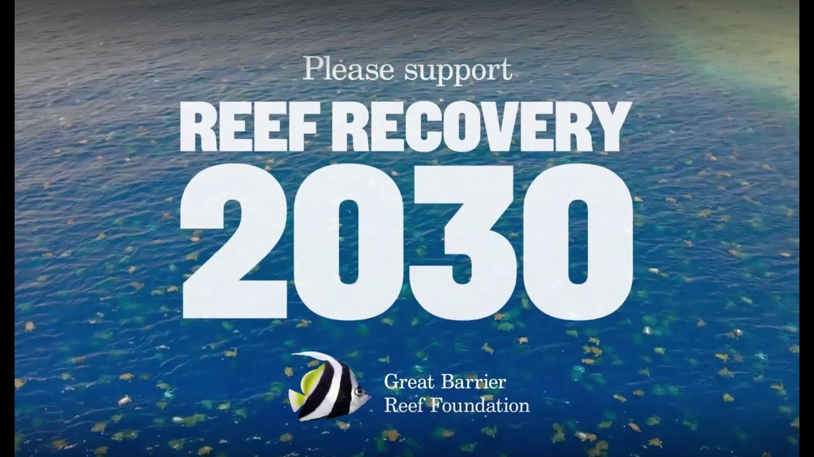

Donations
Donations play a vital role in supporting community-led conservation efforts for the Great Barrier Reef. Contributions help fund critical projects like coral restoration, sustainable fishing practices, pollution reduction, and habitat preservation for mangroves and seagrass beds. By donating, individuals and organizations empower local communities, researchers, and environmental groups to continue their essential work in protecting the reef’s unique ecosystem and ensuring its resilience for future generations.
Barrier Reef Foundation (link)
Marine Conservation Society (link)
To explore the history of conservation efforts for the Great Barrier Reef, please visit the History tab on our homepage. If you're interested in supporting the reef, there are many ways you can get involved. Browse through the sections on community-led conservation, political initiatives, donations, and petitions to learn how you can make a difference.